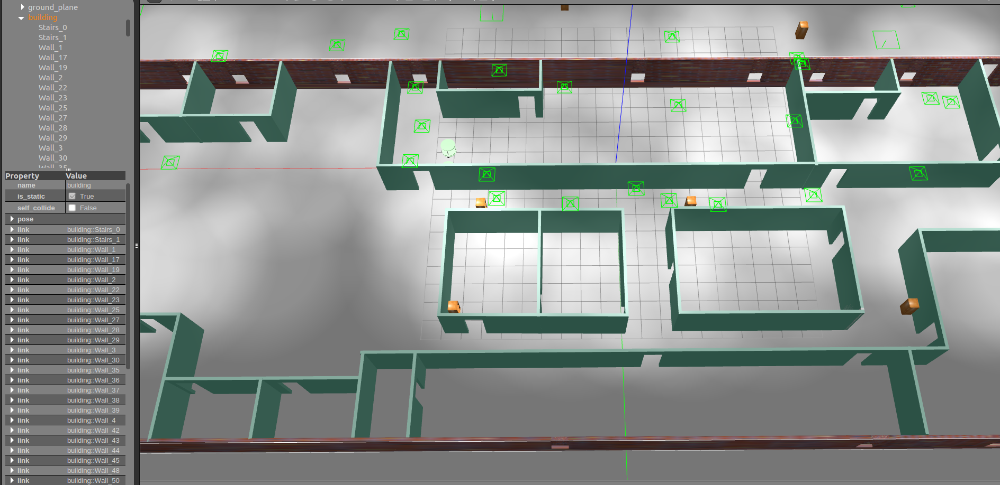
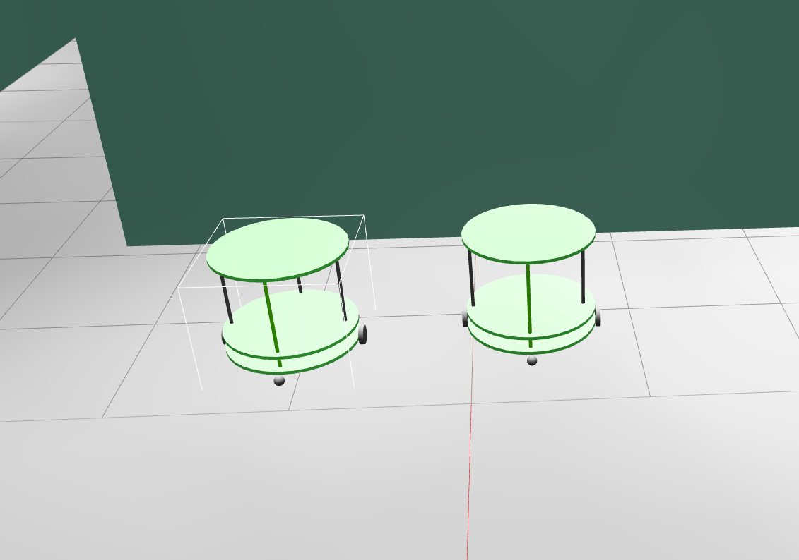
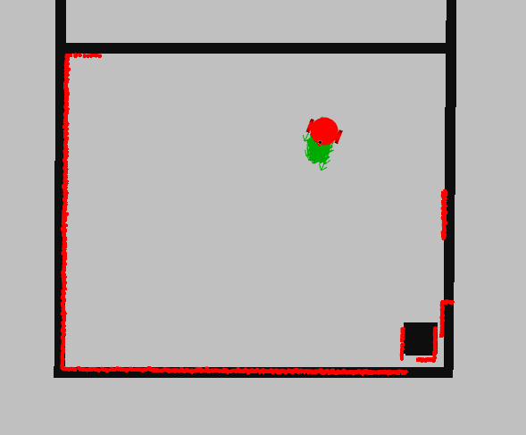
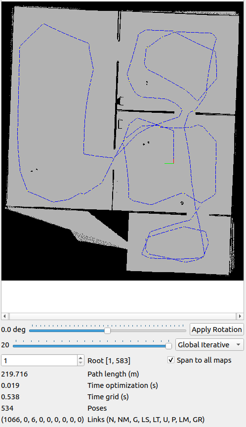
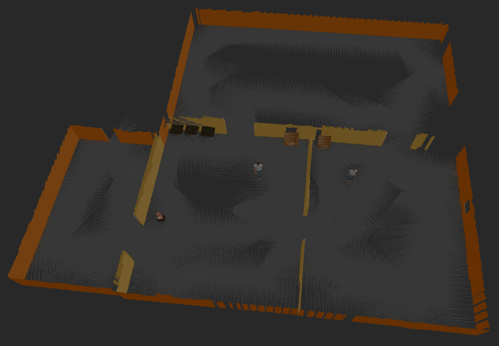
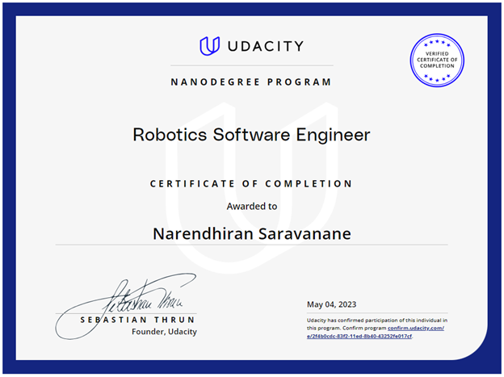

Home-Service Robot Project
Overview
The Home-Service Robot project serves as a comprehensive showcase of robotics expertise, leveraging state-of-the-art technologies and methodologies to demonstrate a mobile robot’s capabilities in a simulated environment. This project harnesses the power of Robot Operating System (ROS), Gazebo simulation, advanced mapping, localization, and path planning to illustrate the robot’s prowess in autonomous navigation and manipulation.
Designing in Physics Engine - Gazebo
Building Editor, Model Editor, and Plugins
The project entails the creation of a dynamic environment using the Building Editor in Gazebo, offering ample space for the robot’s operations. The environment features diverse elements and vibrant colors, enhancing the robot’s navigation experience. The robot itself is meticulously designed using the Model Editor, ensuring precise integration of sensors and mechanical components. Fixed joints connect the robot’s model links, guaranteeing stability during movement.
-
Building Editor: 
-
Model Editor: 
-
Gazebo Plugins: The robot is equipped with advanced sensors, including lidar and camera, with Gazebo plugins seamlessly integrated to facilitate differential drive, lidar sensing, and camera functionality.
Autonomous Operation
Ball Chasing
A key highlight of the project is the robot’s ability to autonomously chase a white-colored ball within the environment. This impressive capability is achieved through the implementation of ROS nodes for interaction and navigation.
- Ball Chasing Video: Watch Ball Chasing Video
Precise Localization
AMCL Package
Accurate localization is fundamental to the robot’s autonomy. The project utilizes the Adaptive Monte Carlo Localization (AMCL) package, a particle filter-based algorithm. AMCL leverages a known map and sensor data, such as laser scans and odometry, to estimate the robot’s pose (position and orientation) within the environment.

Mapping and Navigation
Gmapping and Move_Base
Efficient mapping and navigation are achieved using the gmapping package for 2D occupancy grid mapping. This technology allows the robot to build and utilize maps for its autonomous movement. The move_base package serves as the high-level navigation controller, employing a combination of global and local path planning algorithms to enable obstacle avoidance and efficient goal attainment.
-
Mapping Images:  
-
Path Planning Video: Watch Path Planning Video
Conclusion
The Home-Service Robot Project is a testament to the convergence of cutting-edge robotics concepts and technologies. It highlights the robot’s prowess in autonomous navigation, localization, and interaction within a simulated environment. This project showcases the immense potential of ROS and Gazebo for simulating and validating robotic systems.
For in-depth technical details and access to project code, please visit the GitHub repository.
Certificates and Achievements
Secured an excellent completion reward from the Udacity Team. Graduation Credential 